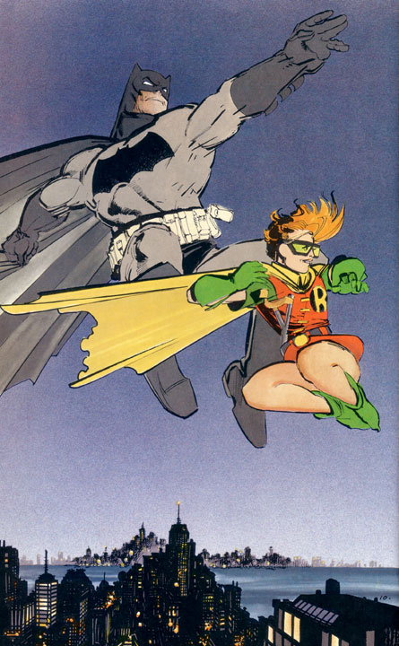
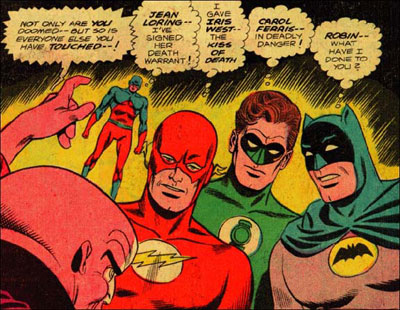

hey guys! im an amateur indy game developer and i recently became addicted to N. i decided to see if I could make a 3d version of it.
its not because the 2d version isnt good, i just ran out of ideas for games and needed to make a game in order to improved my programming skills and i thought this would be a good project.
i am roughly 1/2 done. i have the level editor, controls, physics basically done i just need to add enemies.
i have the ninja model basically done i just havent added it yet.
my main question i wanted to ask is if there is any chance the creators of n would sue me for stolen intellectual property or something if i release the game.
so what does everyone think of my project? do you guys have any ideas for graphics or gameplay?
also, i can understand if you are mad that someone is making this in 3d but i will try to make it as fun a possible.
lastly, the game will be freeware when its released. i will probably release the source code also.
Attachment (lost): post-33-1136524597.jpg
#130105 2 2006-01-06T05:24:16Z astro I can't speak for them, but I'm fairly sure Metanet wouldn't mind.
#130107 3 2006-01-06T05:38:23Z KinGAleX I quite like the idea, except for that darned background. It's really ugly. I would find it to hard to concentrate playing on that. Maybe a monotonous colour for the background would be better?
see the problem is, if the backround is only one color, it would be hard to see the boundries for the level. perhaps you have an idea for a less annoying texture?
#130111 5 2006-01-06T05:45:15Z KinGAleX Hmm, maybe just a grainy-ed fversion of a colour? Something a little less blatant.
would you mind making a .bmp in paint? i dont really know what you mean.
oh and by the way, if anyone helps with the game, they get in the credits.
#130114 7 2006-01-06T05:54:19Z blue_tetris see the problem is, if the backround is only one color, it would be hard to see the boundries for the level. perhaps you have an idea for a less annoying texture?
The border of the level should be the same color as the objects if you can interact with the borders. Your best bet is to use atmospheric effects to show how distant things are. Polygons further away should appear grayer or more faded than those that are close.
i could try that but just like in 2d n, you can climb up the boundry walls so it would still be hard to see what you are holding onto.
#130121 9 2006-01-06T07:29:15Z Atilla DarkBASIC, eh?
Make the BG a paler shade of grey than the normal platforms, and put dark lines at the edges so you can see them.
EDIT: Atmospheric effects are good, too. They prevent the evil Isometric Uncertainty Syndrome.
I'd email Metanet, if you haven't already done so, and ask for permission, which I believe you will get, then include an acknowledgement and link to their website in the credits. Not unlike all the links on N's credits page, actually. And make it's clear that you are not a part of Metanet, of course.
#130123 10 2006-01-06T07:39:54Z shoftee Well, I must say that I'm impressed, the screenshot looks totally awesome. But what exactly is your problem with the enemies?
Anyways, I'm pretty sure M&R won't mind. I mean, you didn't sell it, you didn't hack it (not like some people

), and it looks totally cool. Why would they mind? After all, you DID write it yourself. I'm pretty sure they'd be happy about it rather thn pissed off

.
BTW, I'd be happy to help ya in any way I can (but not the programming, I _don't_ suck only at AS, and you're prolly using OpenGL or DX).
*looks at window title*
DARKBASIC?! WTF?!
*rants*
*stops cuz post became too long*
TS
#130134 11 2006-01-06T08:36:29Z Kettering This is third person right? is there gonna be some options for view? or do you c a set thing.
Like is the camera chasing N? or is it stationed at a spot in the level?
50th post

So what if its small, i still can't believe this game is addicting enough to get me 50 posts while i have the option of world of warcraft sitting right here with me.
#130137 12 2006-01-06T08:45:59Z sweep This looks cool.
For the background, make each wall slightly different shades and shade them with how far away they are.
#130152 13 2006-01-06T11:54:10Z Maniac Unfortunately, 2D levels won't work in 3D N. Even if you stretched the blocks all the way to either side to take up the full 3D space, you'd still have more room to dodge the zap drones and such than otherwise.
#130154 14 2006-01-06T11:56:59Z astro Of course not. There's a whole third dimension to worry about.
#130171 15 2006-01-06T13:18:44Z sweep I know what would be good to show you.
See this image...
And this image...
It's unrealistic to expect you achieve a game that looked as good as that, but it's a rather good guide to follow, looks wise.
#130174 16 2006-01-06T13:53:06Z iangb 
wow. That looks kinda sorta awesome.
I quite like the background, tho' distance-shading would be a big improvement.
#130215 17 2006-01-06T18:38:11Z maximo Also, that picture has no slopes or curves, will they be included? Further, that inviroment looks huge, I'm not sure how big N will be but if it's about the size of those tiles I think it will become too much for one level. Again, going off a picture and a guess, but I would wager that smaller simpler levels would be better.
either way, that looks spiffy.
#130253 18 2006-01-06T22:00:57Z jflash Looks good. I agree on the distance shading, and, as someone said, be sure to Email Metanet (metanet@harveycartel.org) for a speedy response. Good luck!
#130396 19 2006-01-07T05:07:06Z Blazeraid Wow, It looks great, but would need a much smaller play area, or, maybe not, but too big would add lag... A 4 x 4 x 4 map would be fun... yep... Good luck making it.
#130458 20 2006-01-07T12:37:43Z sweep Blaze - this isn't made in Flash, which means that this probably won't have lag. Which is kinda ironic, because it's gonna be more complex than N2d.
#130469 21 2006-01-07T13:49:53Z Teedle May I just be the first (well, allright, upteenth) person to say- Wow. I can't wait till you release this... I reckon it's brilliant.
I also reckon that for a reply from Mare or Raigian, an e-mail would be the best bet, far better than even a PM on this forum.
#130541 22 2006-01-07T19:20:24Z Raigan hi,
Over the past year, 2 or 3 other teams have written us to propose something similar (an N sequel/remake).
Our position on this is: we can't give you permission to use the name, graphics, characters, story, etc. in your game. We intend to develop N in the future and need to remain in control of the IP -- and for instance, a condition of most Canadian grants is that the "chain of title documentation" be 100% controlled by whoever's applying for the grant.
Everyone is free to make a game "inspired by" N -- in the credits to N we've listed several games which influenced us quite a bit when developing N; however, N remains distinct from each of them.
Since we can't give permission to use our IP, we encourage developers to similarly find a way to make their project their own original creation, even when it borrows from or is influenced by other games (such as N). It's not much harder to do, and it means that the resulting ideas will fit much better with the game itself, since you'll have total control over them and will be able to change things to maximize the fun -- you're not locked into anything.
One distinction we'd also like to make is the use of our IP in other fan projects such as comics, animations, etc.. this is fine, since it's work that exists in a different sphere than the game itself. A useful analogy in terms of music: there's a huge difference between recording a cover version of "Yesterday", and painting a picture inspired by the song "Yesterday".
Also, we love knowing about N-related projects, so please email us to show us your N-related stuff; when we update our site we'll be updating the art section!
thanks,
Mare and Raigan
i wont use your titles, names, story etc.. and i cant use your graphics because its 3d but if my gameplay is too similer to yours, are u gonna sue me?
#130549 24 2006-01-07T20:06:56Z Mare Included in the umbrella term "graphics" is the graphic
style of N. N's graphics are minimalist and unique -- though you can't directly use them because they're 2D, as you say, you have _clearly_ used N's graphic style (see your screenshot in this thread), which we can't give you permission to do.
Here's an analogy that will hopefully help clear things up. Take Batman, for instance. There are many ways to draw Batman, and over the years several different artists have drawn the character. Take a look at Frank Miller's Batman:

http://www.frankpepito.com/Batman/Batman-FrankMiller.jpg
and then compare him to this earlier incarnation:

http://timmyray.typepad.com/photos/uncategorized/batman.jpg
These are recognizably two examples of "Batman" -- yet each is different.
These images illustrate that the Batman IP does not include a specific way of drawing Batman. It instead includes characteristics, such as the cowl and basic costume components, names (eg Bruce Wayne), and a bunch of other similar things (elements of history, setting, etc) -- the "essence" of Batman.
My whole point: N's IP includes its graphical style and characters.
Generally, if it is part of what makes N "N", it is part of the IP. Please email us if you need clarification on whether or not something in particular you'd like to include in your project infringes on N's IP.
As we said before, please feel free to make a game which is _influenced_ by N. There's a huge difference between remaking N, and making a game which was inspired by N.
To answer your second question, we'd prefer it if you didn't just skin N, and instead took your project in a unique direction. For instance, since this project is in 3D, things like wall-jumping and wall-sliding are going to have to be completely reinvented -- pressing towards a wall in 3D is _much_ harder than in 2D because it depends on the orientation of the camera, etc. In light of this, it would benefit you to depart from the N gameplay "rules" in favour of ones that suit your project.
Also, please email us if you have specific questions! If you're the same person who emailed us last week, check your inbox. If not, email us!
#130552 25 2006-01-07T20:17:58Z Mare Here's another example we just thought of:
Sonic the Hedgehog and Super Mario Bros.
Both games have similar gameplay elements: running and jumping, jumping on the "top" of an enemy to kill it, time-limited invincibility and other power-ups, bosses, and many other things. They even share a genre: 2D platformer.
However, both games are undeniably distinct from each other. Sonic introduced several gameplay elements Mario doesn't have, and modified others. The way controlling each character "feels" is different as well.
Even though they share a multitude of elements, the Sonic and Mario games remain independent of each other.
That's what we're trying to get at -- though Sonic may have been inspired by Mario, Sonic is still a separate, unique game featuring its own original style and gameplay.
#130571 26 2006-01-07T22:04:22Z maximo mare, that's a verbal warn for a double post (tripple post if you count raigan and yours joint effort)

Either way that's pretty much a bum deal, I understand why though. Meh, 2d N is more than enough for now.
ps: all this stuff on his project and no post on our project... *tear* (not to hassle you)
#130587 27 2006-01-07T22:42:24Z sweep Yep, I can't see any point in N3D if it has to be that different.
That's out the window.
Meh, it would have only sent Macaddict into submission anyway (it was only going to be playable on Windows)
...then i guess this thread is officially closed.
if you are gonna sue me for my game being "too similer" to yours, then im not going to bother finishing it.
there will be no N:3d. sorry to everyone on the forums.
i figured since its a FREE 2d flash game, you wouldnt care, but i guess you need to "protect" your ip.
whatever man.
#130622 29 2006-01-08T00:39:18Z Maniac Look, we're not dissing your game, it's just that there are legal issues and stuff. You're still very welcome to make a game somewhat like N, just not very close.
#130661 30 2006-01-08T02:55:50Z Teedle You could even (I think) just use what you've got, change the look of things a bit (with colours and whanot), and not base the main character on N. Rather, just make him a vagualy humanoid green dude with alien feelers or something... that might work!
#130733 31 2006-01-08T08:47:41Z Atilla You could even (I think) just use what you've got, change the look of things a bit (with colours and whanot), and not base the main character on N. Rather, just make him a vagualy humanoid green dude with alien feelers or something... that might work!
Yeah, there are lots of platformers out there which are quite similar - Super Bubble Blob, Jumper, Dim... Just change the graphics and install some original objects and enemies - there's about six trillion suggestions that are impossible to implement in Flash on the forums, but they'll work fine in BASIC and give your game enough originality to avoid legal issues.
#130787 32 2006-01-08T14:16:03Z shoftee Dude, it's stupid to give up on this project.
(And you ask: Why?) Cuz this thingo looks awesome it's too cool to just throw away. It might not be N in 3D, but it would certainly be useful for something else. Just think about it, ok? Don't give up. Please.
TS
#130792 33 2006-01-08T14:53:09Z Levinous Urgh, I desperately want to play that... I also want to walljump in 3D... And to laugh at the 3D drones. And to look at the 3D gold. And to jump off of rounded platforms. And to see the doors and the switches. And to see teh 3D ninjarz!!!!
Isn't there another way to make it? It seems so fun...


#130806 34 2006-01-08T16:06:30Z Eeyore Could this game not be a fan game? Isn't there some way that although "A: way of the N addict" made N:3D, it could technically be owned by M&R. It just seems a shame to kill off this project, which although I doubt would end up being as good as N, would still be a fun distraction.
#130817 35 2006-01-08T17:04:43Z banan (guest) imho there would be little IP infringement. seeing that a basic element of N is the ability to see the whole level, all the enemies etc, you wouldn't be able to make a similar game in 3D, even if you tried.
#130822 36 2006-01-08T17:38:26Z Raigan we didn't say you couldn't make the game, we just suggested that you use your own ideas as well!
the whole thing is, in the process of moving from 2D to 3D many elements of the gameplay would have to be modified, so at that point the game becomes different. many things simply wouldn't work -- for instance the line-of-sight that chase-drones use would be WAY too hard for the player to understand in 3D.. you'd have to think of something else.
so if it's going to be different, why not use a new theme which works best with the changes/etc.? for instance, from your screenshots it looks very pleasantly chunky/etc.. why not a sort of isometric-view where levels are vaguely medieval-castle-ish/lode-runner-3D? you could be robin-hood-ish dude who has to steal gold from the castle courtyard (the pit-like square center of the castle) while evading guards/archers/etc, running across walls, etc...
not to mention all the graphics.. if you're using 3D hardware than you can do all _sorts_ of better stuff, which doesn't have to be any more complex/harder to do. for instance enemies could be simple swarms of subtractive-blended particles, a-la ico.
we're not trying to discourage people from being creative, our main point was that we reserve the right to make "N" games. some other fans have made games based on N, but they weren't the same sort of game as N.. you could tell they stood on their own. but once you use the graphics AND the gameplay, it just infringes a bit -- what if we wanted to release a 3D version of N in the future? hypothetical, but we'd just prefer to keep our options open!
sorry,
raigan
#130827 37 2006-01-08T17:51:25Z Mare also, clearly, the responses in this thread show overwhelming support for your 3d game project. Tons of people are excited to play the game you're creating. That's a huge thing!
And you're going to give it all up because you now have to create your own characters and setting? It's understandable that losing what you consider to be a crucial part of the game is disappointing, but your game has the potential to be great even without the overt N-ness. Give it a try!
i figured since its a FREE 2d flash game, you wouldnt care, but i guess you need to "protect" your ip.
Ridiculous.
We put a lot of time and effort, and a lot of ourselves in our "FREE 2d flash game". Read any of our interviews, and you'll see that N represents more to us than you seem to think.
#130847 38 2006-01-08T19:56:06Z sweep M&R, the guy is obviously slightly frustrated. He spent quite a lot of time making the half of the game... so, him being annoyed isn't too surprising. Equally, you protecting your game how you are is entirely fair.
I think this guy obviously has a lot of potential as a game coder... I'm in contact with him and I'm going to help him do his own thing.
#130879 39 2006-01-08T21:24:07Z t1mppa I think N would be very interesting in 3d, because it is very different than N in 2d. ( N is also very good game in 2d )
#130882 40 2006-01-08T21:55:20Z Fealiks if you arent giving up completely i had an idea for a texture (for the background or the platrorms)

#130945 41 2006-01-09T01:44:38Z Mare M&R, the guy is obviously slightly frustrated. He spent quite a lot of time making the half of the game... so, him being annoyed isn't too surprising. Equally, you protecting your game how you are is entirely fair.
I think this guy obviously has a lot of potential as a game coder... I'm in contact with him and I'm going to help him do his own thing.
I agree that it's obvious he's frustrated; his disappointment/annoyance is entirely understandable.
we think there's a ton of promise in him, and his project too, and we really hope he doesn't just drop it entirely.
#131034 42 2006-01-09T08:32:18Z astro Certainly a promising project. You've got the right to protect your IPespecially if it's a grant condition. I'm sure the vast majority of the game's code could be re-used, so don't stop it.
#131041 43 2006-01-09T08:45:06Z Teedle Yeah... change colours, textures, the golden cubes to red balls, green alien guy as N, call it "Space Baller" or something, and who'd be able to tell?
Really, I'd love to see this project, even if edited slightly.
#131054 44 2006-01-09T10:19:53Z sweep But... the thing is... N3d isn't really N3d if he has to change the feel of it. It's not quite the same.
I understand your point of view, and heck, you're right, he could make something very similar, but he's better starting something from scratch than editing it until it no longer seems like just a 3d version of N.
#132348 45 2006-01-14T15:59:54Z Teedle Meh. As much as I agree, putting all that hard work into something that never even gets anywhere near completed... man would that suck.
#133269 46 2006-01-17T23:15:43Z Guest_adam77 (guest) Any more news on this project?
Sweep, are you still going to help this person out? What has he decided to do. I think it looks good.
#133383 47 2006-01-18T08:42:52Z sweep I want to create an entirely different game with him. We've exchanged contact details, hopefully we'll sort something out.
#134160 48 2006-01-21T00:22:40Z Byto333 WOAH I'M A MEMBER ON THIS SITE... hey if it ever comes out i want it.
Attachment (lost): post-33-1137802960.jpg
#134272 49 2006-01-21T09:01:35Z Sucker WTF? Is this a new trend?
#139352 50 2006-02-04T10:40:26Z Byto333 any news on this?
#139399 51 2006-02-04T15:34:23Z sTEFANo No news for two weeks
#139727 52 2006-02-05T05:01:03Z Ravenclaw The project looks really sweet, I'd like to see the 3-D drones.
#140490 53 2006-02-07T08:44:51Z Wild_Spy (guest) My English is not very well...but I have some question ...
When this project will be aviable for downloading ?
I am a big fan of the 'N' and I am interested in N in 3D ...
Please, answer me !!!
#140496 54 2006-02-07T10:08:27Z Atramentis My English is not very well...but I have some question ...
When this project will be aviable for downloading ?
I am a big fan of the 'N' and I am interested in N in 3D ...
Please, answer me !!!
Ok, I'll try updating you in your language:
N 3d is no coming out.
You not can get it.
Stop asking, not coming out.
Maker not allowed take ideas.
#141804 55 2006-02-10T19:00:22Z IKnowYourSecret hey guys! im an amateur indy game developer and i recently became addicted to N. i decided to see if I could make a 3d version of it.
its not because the 2d version isnt good, i just ran out of ideas for games and needed to make a game in order to improved my programming skills and i thought this would be a good project.
i am roughly 1/2 done. i have the level editor, controls, physics basically done i just need to add enemies.
i have the ninja model basically done i just havent added it yet.
my main question i wanted to ask is if there is any chance the creators of n would sue me for stolen intellectual property or something if i release the game.
so what does everyone think of my project? do you guys have any ideas for graphics or gameplay?
also, i can understand if you are mad that someone is making this in 3d but i will try to make it as fun a possible.
lastly, the game will be freeware when its released. i will probably release the source code also.
OMG!! I just thought of this for myself and thought maybe Ill suggest it to the N team, and in the last second I find THIS! I hope N team hires you and lets you job on this officially
And I hope this comes out soon *cant stand still*EDIT: Oh, I read a few more posts and am sorry to hear that you cant make this game "N".
However,
If the orig. N team is skilled in 3D animating, coding, modeling, programming (isnt that the same as coding?) mapping etc., it would be far greater if they made a 3D N game. I mean, think of the possiblilties

And look at those images that sweep posted:
http://www.harveycartel.org/metanet/n/n_do...dN1_megageo.jpg
http://www.harveycartel.org/metanet/n/n_do...dN2_megageo.jpg
Took of the IMG tags for 56kers and gave sweep creds originally posting the picture here:)
The only bad things about these pictures are that the levels seem to be... limited so you can only take back, forward, up and down as a path if you want to take an efficent one... completely ruins the point in a 3D N. The graphichs, however, imagine if the N team managed to create just as good graphichs for that game... if they made it
PLEASE, N team, do this thing!
Opps and I just saw the pictures are from the site
ok completely late post i really am interested in seeing this game, i wonder what the floorguards will be like and the rockets and gauss turrets...
looks cool

#153055 57 2006-03-09T06:24:30Z Atramentis Oh my god, have you noobs read ANY of this thread apart from the title?
#153268 58 2006-03-10T00:29:50Z Evil Bob Prabably not. Too bad this won't be made... I hope sweep lets us know if he makes any more games... That would be sweet...
#153384 59 2006-03-10T08:38:02Z sweep I emailed him the other day with some ideas, so it's just a matter of waiting to see what he thinks now.
#159931 60 2006-03-30T23:04:15Z Fol67 I hav an idea why dont you name your game Stealth Ninja OR Secrets of a Ninja if im was not 2 much help srry I thin k your game s nice I know no ne else is on your side but I am FINISH THAT GREAT GAME of yours you will be doing the world a favor and even if its not called "N" people will know what game its made after and sell it commercially and make money off of it just to show meteanet that you are just as good as them
#159949 61 2006-03-30T23:38:39Z smartalco @Fol67:
1. your grammer sucks
2. he cant just make it and sell it, thats called copyright infringement, which happens to be illegal, most of us agree it could be a good game, but its illegal, sorry
3. unless we have any new news someone lock this thread, having it come back up every three weeks thanks to a noob (sry if I sound po'd but I kinda am right now)
#161240 62 2006-04-03T02:13:34Z diehard if that guy is still here - maybe you should keep the idea, just change the models, then its not copyright infringement, as long as you say it was inspired by N
#169999 63 2006-04-30T18:48:34Z No. i will not enter my name! (guest) 3d N will completely destroy all of what made it good. the whole 2d lode runner type game is what makes me like it. if you want a good 3d ninja game thats just as challenging as this game, buy Ninja Jaiden (preferrably the black version) for XboX. it is the best game ive ever played personally. its fast and precise like N, except the graphics are incredible for 3d, and you get... weapons! get it. (because if you liked god of war, devil may cry, N, or prince of persia which all got rave reviews youll cry when you play it. especially because you can unlock the original ninja gaiden trilogy which is reminicent of castlevania. plus, it comes with hurricaine pack 2 & 3, so you get 6 ninja gaidens for roughly $25)
sorry if this is like an advertisement, but i love the game, and all N players would love it.
#170067 64 2006-04-30T21:34:34Z elaxion your review is great, but um...your not supposed to revive topics that are more than a month old, and this is close enough to a month
#170133 65 2006-04-30T23:04:21Z Andy The background is abhorant,and ugly.
I love the idea of a 3-Dimension N, Though.
#170419 66 2006-05-01T10:08:45Z ZZ9 hi,
Over the past year, 2 or 3 other teams have written us to propose something similar (an N sequel/remake).
Our position on this is: we can't give you permission to use the name, graphics, characters, story, etc. in your game. We intend to develop N in the future and need to remain in control of the IP -- and for instance, a condition of most Canadian grants is that the "chain of title documentation" be 100% controlled by whoever's applying for the grant.
Everyone is free to make a game "inspired by" N -- in the credits to N we've listed several games which influenced us quite a bit when developing N; however, N remains distinct from each of them.
Since we can't give permission to use our IP, we encourage developers to similarly find a way to make their project their own original creation, even when it borrows from or is influenced by other games (such as N). It's not much harder to do, and it means that the resulting ideas will fit much better with the game itself, since you'll have total control over them and will be able to change things to maximize the fun -- you're not locked into anything.
One distinction we'd also like to make is the use of our IP in other fan projects such as comics, animations, etc.. this is fine, since it's work that exists in a different sphere than the game itself. A useful analogy in terms of music: there's a huge difference between recording a cover version of "Yesterday", and painting a picture inspired by the song "Yesterday".
Also, we love knowing about N-related projects, so please email us to show us your N-related stuff; when we update our site we'll be updating the art section!
thanks,
Mare and Raigan
Just to make it clear for anyone else passing.
#170442 67 2006-05-01T11:56:01Z Mysterypea No wonder everybody likes M&R

They are THE N maestro. Just to make the fact of it. Without getting sarcasmated.
#170482 68 2006-05-01T14:32:44Z CDotLeach Im quite disappointed that youre not allowed to make it like N, i think it wouldve made a good game. ^ Formica's idea sounds good, if youre still not allowed to do that then maybe you should add a couple new features like rope slinging and stuff like that.
Couple questions though, would all the buttons be the same?
And the cameraviews, would you be able to change them?
How would you create maps? Would it be a 2D map maker converted to 3D or would you make the map in 3D view?
#170612 69 2006-05-01T21:03:36Z smartalco 1. the guy that was making this left
2. look at number 3 from my post at the top of this page
an N 3d would be cool if it had the whole prince of persia acrobatics. ie running on walls, up walls, all that stuff.
#172090 71 2006-05-05T00:43:46Z Meal But there would be no neditor
i only said the physics, not the entire game.
#172379 73 2006-05-05T20:12:03Z 3v!1 an N 3d would be cool if it had the whole prince of persia acrobatics. ie running on walls, up walls, all that stuff.
You do know that the original Prince Of Persia had noting to do with running on walls?
Likewise with N.
If we put N in 3D, what would it be? Although I'm looking at this from a commercial point of view, it would be just another collect-run-avoid-finish platformer. Who needs more of them? If you want that sort of game, go and buy some shoddy 3+ for your PS2 from the bargain bin.
Why N is good is because it's simple - shock, horror! The point of the game is simplicity, there's no open-endness, no "boss" thingys, no War On Terror, no GTA. ZZ9 has the point as well, we can't base a proper game directly on N for legal reasons.
thats sorta what N is. like i said, i didnt mean for the game to be a complete copy, but it would be cool if it had acrobatics like prince of persia the two thrones.
#172842 75 2006-05-06T18:45:24Z 3v!1 Nhhh.
Did you even read my post? I'm talking about a 3D version of N.
And if you want Price Of Persia, then play it.
#173117 76 2006-05-07T11:59:05Z Andy You could put a textured background,So you could see the boundaries
#173147 77 2006-05-07T12:57:02Z ZZ9 You realize that making a 3d N is impossible due to copyright law.
#173156 78 2006-05-07T13:16:31Z 3v!1 hi,
Over the past year, 2 or 3 other teams have written us to propose something similar (an N sequel/remake).
Our position on this is: we can't give you permission to use the name, graphics, characters, story, etc. in your game. We intend to develop N in the future and need to remain in control of the IP -- and for instance, a condition of most Canadian grants is that the "chain of title documentation" be 100% controlled by whoever's applying for the grant.
Everyone is free to make a game "inspired by" N -- in the credits to N we've listed several games which influenced us quite a bit when developing N; however, N remains distinct from each of them.
Since we can't give permission to use our IP, we encourage developers to similarly find a way to make their project their own original creation, even when it borrows from or is influenced by other games (such as N). It's not much harder to do, and it means that the resulting ideas will fit much better with the game itself, since you'll have total control over them and will be able to change things to maximize the fun -- you're not locked into anything.
One distinction we'd also like to make is the use of our IP in other fan projects such as comics, animations, etc.. this is fine, since it's work that exists in a different sphere than the game itself. A useful analogy in terms of music: there's a huge difference between recording a cover version of "Yesterday", and painting a picture inspired by the song "Yesterday".
Also, we love knowing about N-related projects, so please email us to show us your N-related stuff; when we update our site we'll be updating the art section!
thanks,
Mare and Raigan
Just to make it clear for anyone else passing.
Point strengthened.
#173356 79 2006-05-07T23:24:40Z smartalco just out of curiosity what if someone made the game then gave M&R complete rights to it?
other then that... LOCK THIS THREAD!!!!!
#173485 80 2006-05-08T04:03:38Z kiteyeniah #173694 81 2006-05-08T23:27:46Z abcdman2 |()(|< +|-|15!!!one!1!!!uno!11!zero+onezorz!1!1one+shift!two!1
Sorry, but it's getting annoying having this revived; I really think it should be locked. I'm not backdoor moderating, just saying what I think should happen.
#177042 82 2006-05-17T15:28:29Z Guest i WANT IT!!
#177075 83 2006-05-17T17:17:26Z mascote_ponto And I want a new computer, a new cellphone, I want to drive and have a good car, a house with a big swimming pool and with lots of space for my four dogs, lots of video games and I also want to know everything there is to know about science and informatics. That's for the beginning...
We can't have everything we want, so liking it or not, it won't be made.
#177163 84 2006-05-17T21:17:13Z smartalco im sorry but i am INCREDIBLY TIRED OF GUESTS/NOOBS REVIVING THIS THREAD!!!, LOCK IT NOW!! (prepares for warning...)
#179863 85 2006-05-24T17:26:13Z gert7 It was my idea but you came up with it first!

#179867 86 2006-05-24T17:35:00Z mascote_ponto CAN ANY MODERATOR
PLEASE LOCK THIS???
DAMN IT, IM SICK OF PEOPLE REVIVING THIS!
Geez...